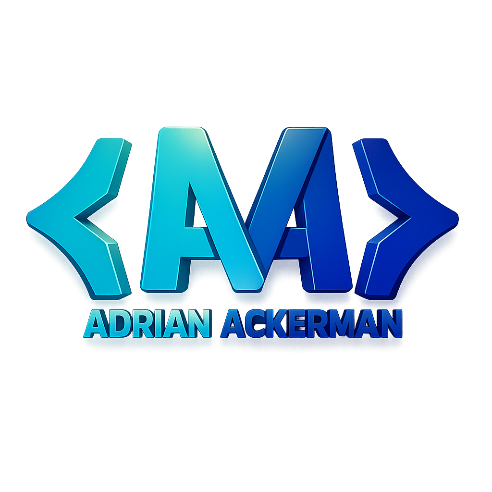
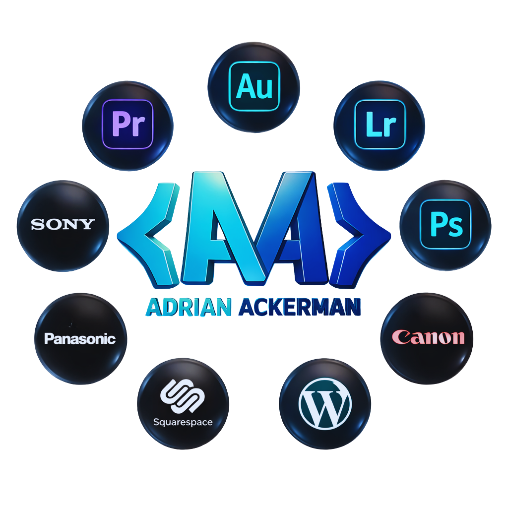

Hi there, I'm Adrian!
With 5.5 years of experience with video, photo and audio, 3 years of social media, 3.5 years administration, and 4 years customer service, I have honed my skills to deliver the best client service.

Adrian Ackerman
With 5.5 years of experience with video, photo and audio, 3 years of social media, 3.5 years administration, and 4 years customer service, I have honed my skills to deliver the best client service.
I specialize in a variety of tools and software that allow me to produce high-quality and professional photos and videos.

I'm based in the USA, Walla Walla, Washington, and open to remote work worldwide.

This video project was created during a summer internship with the City of York, and it serves as an insightful look into the city's identity, community spirit, and future potential. Presented to the York City Council on August 19, 2024, the piece captures the voices of local residents and business owners to articulate what makes the city a unique place to live and grow.
This video gives you a glimples into the daily life of a media intern.
At the tail-end of a worldwide pandemic, Adrian crossed the Atlantic to be a media intern with OMF UK. It took two years to get here, but now they've finished the internship. But was it worth it? Find out in the official trailer for the media internship.
Take a look inside our devotional adventure book A Taste of Asia with the Ayling family! Hear from Natch & Anna about how it helped them in family devotional times. Plus, the kids share about the activities and stories they liked best.
This video answers some key questions you may have about getting involved in mission.
We asked a few students on campus what they knew about the gender studies program, and then, we asked students already in the program how they would describe it. Reel created by Adrian Ackerman
No, they're not two gay men in love. They're a queer angel and demon who possess nonbinary gender identity, with an asexual bond, experiencing queer time. I've heard plenty of Good Omens fans talk about the romance side of Aziraphale and Crowley's relationship, but I wanted to focus on their aspects of nonbinary gender identity, asexuality and the experience of queer time instead. I hope I did an effective job! I used Adobe Premiere Pro, Adobe Audition, and Adobe After Effects, as well as footage from Amazon Studios' TV Good Omens.
What does it mean to live well in our bodies and in community with one another? How do gender and sexuality, along with factors like race, class, and nationality, shape our identities and efforts towards liberation? Gender Studies opens a window onto these profound questions, and more.
.png)
Whether you're looking to create to record your most precious memories or to edit your videos into compelling narratives, I am here to help.